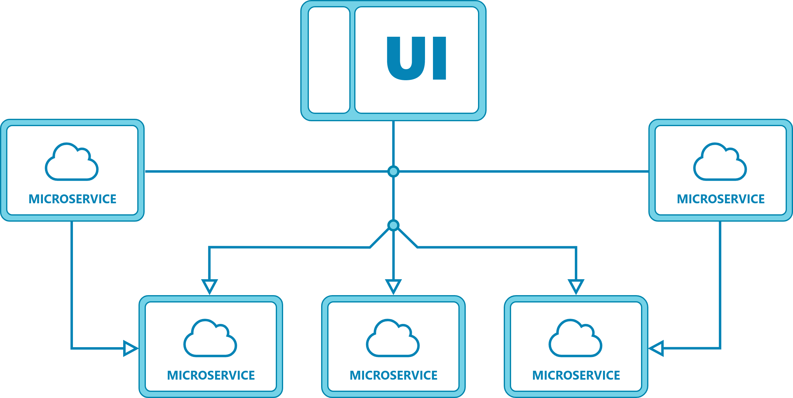

"I microservizi sono un approccio architetturale ottimizzato e modulare alla realizzazione di applicazioni"
Ciò che contraddistingue l'architettura basata sui microservizi è la suddivisione dell'applicazione in diverse funzioni.
Difatti, questi servizi possono essere implementati in maniera indipendente l'uno dall'altro.
Quindi un servizio può smettere di funzionare senza compromettere gli altri.
Prendiamo per esempio un sito web come Amazon, dove un utente può:
Questi sono tutti dei servizi indipendenti

Un esempio di architettura basata sui microservizi
Quindi, un microservizio si tratta di una funzione base di un'applicazione che viene eseguita in maniera indipendente dagli altri servizi.
Questo significa che il microservizio può essere implementato in maniera indipendente dall'applicazione stessa.